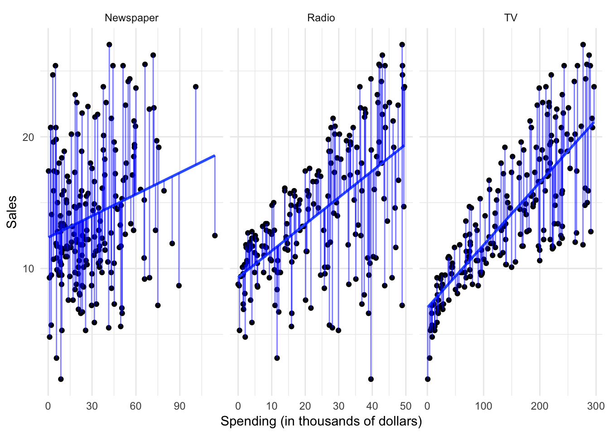

Statistical learning: the basics
What is statistical learning?
Statistical models attempt to summarize relationships between variables by reducing the dimensionality of the data. For example, here we have some simulated data on sales of Shamwow in 200 different markets.

Our goal is to improve sales of the Shamwow. Since we cannot directly increase sales of the product (unless we go out and buy it ourselves), our only option is to increase advertising across three potential mediums: newspaper, radio, and TV.
In this example, the advertising budgets are our input variables, also called independent variables, features, or predictors. The sales of Shamwows is the output, also called the dependent variable or response.
By plotting the variables against one another using a scatterplot, we can see there is some sort of relationship between each medium’s advertising spending and Shamwow sales:

But there seems to be a lot of noise in the data. How can we summarize this? We can do so by estimating a mathematical equation following the general form:
\[Y = f(X) + \epsilon\]
where \(f\) is some fixed, unknown function of the relationship between the independent variable(s) \(X\) and the dependent variable \(Y\), with some random error \(\epsilon\).
Statistical learning refers to the set of approaches for estimating \(f\). There are many potential approaches to defining the functional form of \(f\). One approach widely used is called least squares - it means that the overall solution minimizes the sum of the squares of the errors made in the results of the equation. The errors are simply the vertical difference between the actual values for \(y\) and the predicted values for \(y\). Applied here, the results would look like:

However statistical learning (and machine learning) allows us to use a wide range of functional forms beyond a simple linear model.
Why estimate \(f\)?
There are two major goals of statistical modeling:
Prediction
Under a system of prediction, we use our knowledge of the relationship between \(X\) and \(Y\) to predict \(Y\) for given values of \(X\). Often the function \(f\) is treated as a black box - we don’t care what the function is, as long as it makes accurate predictions. If we are trying to boost sales of Shamwow, we may not care why specific factors drive an increase in sales - we just want to know how to adjust our advertising budgets to maximize sales.
Inference
Under a system of inference, we use our knowledge of \(X\) and \(Y\) to understand the relationship between the variables. Here we are most interested in the explanation, not the prediction. So in the Shamwow example, we may not care about actual sales of the product - instead, we may be economists who wish to understand how advertising spending influences product sales. We don’t care about the actual product, we simply want to learn more about the process and generalize it to a wider range of settings.
How do we estimate \(f\)?
There are two major approaches to estimating \(f\): parametric and non-parametric methods.
Parametric methods
Parametric methods involve a two-stage process:
- First make an assumption about the functional form of \(f\). For instance, OLS assumes that the relationship between \(X\) and \(Y\) is linear. This greatly simplifies the problem of estimating the model because we know a great deal about the properties of linear models.
- After a model has been selected, we need to fit or train the model using the actual data. We demonstrated this previously with ordinary least squares. The estimation procedure minimizes the sum of the squares of the differences between the observed responses \(Y\) and those predicted by a linear function \(\hat{Y}\).

This is only one possible estimation procedure, but is popular because it is relatively intuitive. This model-based approach is referred to as parametric, because it simplifies the problem of estimating \(f\) to estimating a set of parameters in the function:
\[Y = \beta_0 + \beta_{1}X_1\]
where \(Y\) is the sales, \(X_1\) is the advertising spending in a given medium (newspaper, radio, or TV), and \(\beta_0\) and \(\beta_1\) are parameters defining the intercept and slope of the line.
The downside to parametric methods is that they assume a specific functional form of the relationship between the variables. Sometimes relationships really are linear - often however they are not. They could be curvilinear, parbolic, interactive, etc. Unless we know this a priori or test for all of these potential functional forms, it is possible our parametric method will not accurately summarize the relationship between \(X\) and \(Y\).
Non-parametric methods
Non-parametric methods do not make any assumptions about the functional form of \(f\). Instead, they use the data itself to estimate \(f\) so that it gets as close as possible to the data points without becoming overly complex. By avoiding any assumptions about the functional form, non-parametric methods avoid the issues caused by parametic models. However, by doing so non-parametric methods require a large set of observations to avoid overfitting the data and obtain an accurate estimate of \(f\).
One non-parametric method is called \(K\)-nearest neighbors regression (KNN regression). Rather than binning the data into discrete and fixed intervals, KNN regression uses a moving average to generate the regression line. Given a value for \(K\) and a prediction point \(x_0\), KNN regression identifies the \(K\) observations closest to the prediction point \(X_0\), and estimates a local regression line that is the average of these observations values for the outcome \(Y\).
With \(K=1\), the resulting KNN regression line will fit the training observations extraordinarily well.

Perhaps a bit too well. Compare this to \(K=9\):

This smoothing line averages over the nine nearest observations; while still a step function, it is smoother than \(K=1\).
Classification vs. regression
Variables can be classified as quantitative or qualitative. Quantitative variables take on numeric values. In contrast, qualitative variables take on different classes, or discrete categories. Qualitative variables can have any number of classes, though binary categories are frequent:
- Yes/no
- Male/female
Problems with a quantitative dependent variable are typically called regression problems, whereas qualitative dependent variables are called classification problems. Part of this distinction is merely semantic, but different methods may be employed depending on the type of response variable. For instance, you would not use linear regression on a qualitative response variable. Conceptually, how would you define a linear function for a response variable that takes on the values “male” or “female”? It doesn’t make any conceptual sense. Instead, you can employ classification methods such as logistic regression to estimate the probability that based on a set of predictors a specific observation is part of a response class.
That said, whether predictors are qualitative or quantitative is not important in determining whether the problem is one of regression or classification. As long as qualitative predictors are properly coded before the analysis is conducted, they can be used for either type of problem.
Session Info
## ─ Session info ──────────────────────────────────────────────────────────
## setting value
## version R version 3.5.2 (2018-12-20)
## os macOS Mojave 10.14.3
## system x86_64, darwin15.6.0
## ui X11
## language (EN)
## collate en_US.UTF-8
## ctype en_US.UTF-8
## tz America/Chicago
## date 2019-03-02
##
## ─ Packages ──────────────────────────────────────────────────────────────
## package * version date lib source
## assertthat 0.2.0 2017-04-11 [2] CRAN (R 3.5.0)
## backports 1.1.3 2018-12-14 [2] CRAN (R 3.5.0)
## base64enc 0.1-3 2015-07-28 [2] CRAN (R 3.5.0)
## bindr 0.1.1 2018-03-13 [2] CRAN (R 3.5.0)
## bindrcpp * 0.2.2 2018-03-29 [1] CRAN (R 3.5.0)
## broom * 0.5.1 2018-12-05 [2] CRAN (R 3.5.0)
## callr 3.1.1 2018-12-21 [2] CRAN (R 3.5.0)
## cellranger 1.1.0 2016-07-27 [2] CRAN (R 3.5.0)
## cli 1.0.1 2018-09-25 [1] CRAN (R 3.5.0)
## codetools 0.2-16 2018-12-24 [2] CRAN (R 3.5.2)
## colorspace 1.4-0 2019-01-13 [2] CRAN (R 3.5.2)
## crayon 1.3.4 2017-09-16 [2] CRAN (R 3.5.0)
## desc 1.2.0 2018-05-01 [2] CRAN (R 3.5.0)
## devtools 2.0.1 2018-10-26 [1] CRAN (R 3.5.1)
## digest 0.6.18 2018-10-10 [1] CRAN (R 3.5.0)
## dplyr * 0.8.0.1 2019-02-15 [1] CRAN (R 3.5.2)
## evaluate 0.13 2019-02-12 [2] CRAN (R 3.5.2)
## fansi 0.4.0 2018-10-05 [2] CRAN (R 3.5.0)
## farver 1.1.0 2018-11-20 [1] CRAN (R 3.5.0)
## FNN * 1.1.3 2019-02-15 [2] CRAN (R 3.5.2)
## forcats * 0.4.0 2019-02-17 [2] CRAN (R 3.5.2)
## fs 1.2.6 2018-08-23 [1] CRAN (R 3.5.0)
## generics 0.0.2 2018-11-29 [1] CRAN (R 3.5.0)
## gganimate * 1.0.1 2019-02-15 [1] CRAN (R 3.5.2)
## ggplot2 * 3.1.0 2018-10-25 [1] CRAN (R 3.5.0)
## glue 1.3.0 2018-07-17 [2] CRAN (R 3.5.0)
## gtable 0.2.0 2016-02-26 [2] CRAN (R 3.5.0)
## haven 2.1.0 2019-02-19 [2] CRAN (R 3.5.2)
## here * 0.1 2017-05-28 [2] CRAN (R 3.5.0)
## hms 0.4.2 2018-03-10 [2] CRAN (R 3.5.0)
## htmltools 0.3.6 2017-04-28 [1] CRAN (R 3.5.0)
## httr 1.4.0 2018-12-11 [2] CRAN (R 3.5.0)
## jsonlite 1.6 2018-12-07 [2] CRAN (R 3.5.0)
## knitr 1.21 2018-12-10 [2] CRAN (R 3.5.1)
## labeling 0.3 2014-08-23 [2] CRAN (R 3.5.0)
## lattice * 0.20-38 2018-11-04 [2] CRAN (R 3.5.2)
## lazyeval 0.2.1 2017-10-29 [2] CRAN (R 3.5.0)
## lubridate 1.7.4 2018-04-11 [2] CRAN (R 3.5.0)
## magrittr 1.5 2014-11-22 [2] CRAN (R 3.5.0)
## memoise 1.1.0 2017-04-21 [2] CRAN (R 3.5.0)
## modelr 0.1.4 2019-02-18 [2] CRAN (R 3.5.2)
## munsell 0.5.0 2018-06-12 [2] CRAN (R 3.5.0)
## nlme 3.1-137 2018-04-07 [2] CRAN (R 3.5.2)
## pillar 1.3.1 2018-12-15 [2] CRAN (R 3.5.0)
## pkgbuild 1.0.2 2018-10-16 [1] CRAN (R 3.5.0)
## pkgconfig 2.0.2 2018-08-16 [2] CRAN (R 3.5.1)
## pkgload 1.0.2 2018-10-29 [1] CRAN (R 3.5.0)
## plyr 1.8.4 2016-06-08 [2] CRAN (R 3.5.0)
## prettyunits 1.0.2 2015-07-13 [2] CRAN (R 3.5.0)
## processx 3.2.1 2018-12-05 [2] CRAN (R 3.5.0)
## progress 1.2.0 2018-06-14 [2] CRAN (R 3.5.0)
## ps 1.3.0 2018-12-21 [2] CRAN (R 3.5.0)
## purrr * 0.3.0 2019-01-27 [2] CRAN (R 3.5.2)
## R6 2.4.0 2019-02-14 [1] CRAN (R 3.5.2)
## Rcpp 1.0.0 2018-11-07 [1] CRAN (R 3.5.0)
## readr * 1.3.1 2018-12-21 [2] CRAN (R 3.5.0)
## readxl 1.3.0 2019-02-15 [2] CRAN (R 3.5.2)
## remotes 2.0.2 2018-10-30 [1] CRAN (R 3.5.0)
## rlang 0.3.1 2019-01-08 [1] CRAN (R 3.5.2)
## rmarkdown 1.11 2018-12-08 [2] CRAN (R 3.5.0)
## rprojroot 1.3-2 2018-01-03 [2] CRAN (R 3.5.0)
## rstudioapi 0.9.0 2019-01-09 [1] CRAN (R 3.5.2)
## rvest 0.3.2 2016-06-17 [2] CRAN (R 3.5.0)
## scales 1.0.0 2018-08-09 [1] CRAN (R 3.5.0)
## sessioninfo 1.1.1 2018-11-05 [1] CRAN (R 3.5.0)
## stringi 1.3.1 2019-02-13 [1] CRAN (R 3.5.2)
## stringr * 1.4.0 2019-02-10 [1] CRAN (R 3.5.2)
## testthat 2.0.1 2018-10-13 [2] CRAN (R 3.5.0)
## tibble * 2.0.1 2019-01-12 [2] CRAN (R 3.5.2)
## tidyr * 0.8.2.9000 2019-02-11 [1] Github (tidyverse/tidyr@0b27690)
## tidyselect 0.2.5 2018-10-11 [1] CRAN (R 3.5.0)
## tidyverse * 1.2.1 2017-11-14 [2] CRAN (R 3.5.0)
## tweenr 1.0.1 2018-12-14 [1] CRAN (R 3.5.0)
## usethis 1.4.0 2018-08-14 [1] CRAN (R 3.5.0)
## utf8 1.1.4 2018-05-24 [2] CRAN (R 3.5.0)
## withr 2.1.2 2018-03-15 [2] CRAN (R 3.5.0)
## xfun 0.5 2019-02-20 [1] CRAN (R 3.5.2)
## xml2 1.2.0 2018-01-24 [2] CRAN (R 3.5.0)
## yaml 2.2.0 2018-07-25 [2] CRAN (R 3.5.0)
##
## [1] /Users/soltoffbc/Library/R/3.5/library
## [2] /Library/Frameworks/R.framework/Versions/3.5/Resources/libraryThis work is licensed under the CC BY-NC 4.0 Creative Commons License.